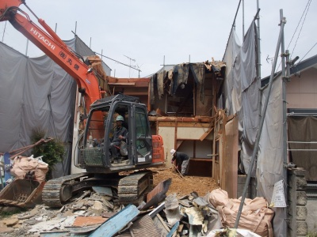
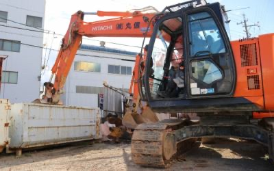
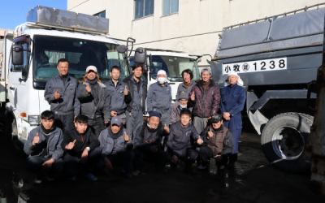
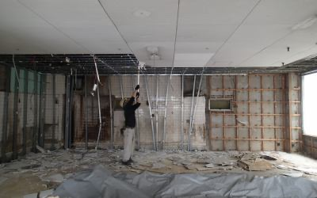

RECRUIT
採用情報
ABOUT
現代の建設工事は
「解体工事」から始まります
株式会社丸信は、「壊す」ことのプロ集団として本拠地・春日井を中心に東海3県エリアに密着し、建物の「解体工事」を行う会社です。
解体について
現在の建築は、まっさらな土地に新しく建てるのではなく、既存の建物を壊してから建てるのが主流です。これまで人々の暮らしを支えてきた建物が、再開発により新しく建造され、よりもっと人々の暮らしを豊かにする。その前提には必ず解体工事があるのです。まさに、これは「創造的破壊」であり、再開発の過程に私たちの技術は必要不可欠です。
代表からのメッセージ
現在の建設工事のスタートは「解体工事」から始まります。その重要度の割に、建設現場の裏方的存在で脚光を浴びることはありませんでしたが、2016年6月に建設業許可の改定に伴い、解体工事業が新たに追加されました。これは解体工事が専門職として、行政から認められたと言う事です。
公衆災害の防止、産業廃棄物の適正処理、密集地内での解体技術の向上等、やるべきことは多岐にわたります。着実に安定成長し続ける「解体業界」、そして「株式会社丸信」で、共により魅力的な創造的破壊に取り組んでいきましょう！
ご家族の方へ
平成15年に法人化して以来、丁寧な建物解体技術が評価され、お客様が着実に増えています。また、官公庁からの仕事も増え、地域社会にも貢献して参りました。
作業スタッフは能力次第で随時昇給し、資格取得も会社がバックアップするなど、長く勤められる環境の整備をしています。
建築業界経験者も、全くの未経験者も大歓迎。ご入社される全ての方々を将来の幹部候補としてお迎えしております。

福利厚生
- 昇給・賞与あり昇給 年1回・賞与 年2回
- 社会保険完備厚生年金・健康保険・雇用保険・労災保険
- 退職金制度あり勤続2年以上が対象
- 資格取得の支援業務に必要な資格の取得を支援
RECRUIT
募集している仕事
勤務地：春日井市松河戸町（JR勝川駅より車で5分・車通勤OK）勤務時間：8:00〜17:00

解体作業員
ビル・工場・一般住宅などの解体作業をお任せします。年齢・学歴は問いません。
日給 1万3000円〜1万5000円月給30万円も選べます
詳しい条件を見る
- 仕事内容
- ビル・工場・一般住宅などの解体作業
- 給与
- 日給 13,000円〜15,000円、または月給 30万円（どちらか選べます）
前職の給与保証あり
交通費 規定支給（月1万円まで） - 勤務時間
- 8:00〜17:00（休憩90分）
残業ほぼなし - 休日
- 日給の方：希望の曜日に休めます
月給の方：週休2日制（日・祝日＋ほか1日・当社カレンダー）
夏季休暇・年末年始休暇
土曜の休みも相談できます - 応募の条件
- 年齢・学歴は問いません
解体工事の経験がある方は優遇します - 福利厚生
- 社会保険完備
昇給・賞与 年2回
寮あり（単身用・世帯用）
応募は採用サイト（Airワーク）の画面で受け付けています

重機オペレーター
解体工事の現場で、重機を動かして建物を解体します。車両系建設機械の技能講習の修了が必要です。
日給 1万7000円〜2万2000円月給36万円以上も選べます
詳しい条件を見る
- 仕事内容
- 解体工事の現場で、重機を使った解体作業（ビル・工場・一般住宅など）
- 給与
- 日給 17,000円〜22,000円、または月給 36万円以上（どちらか選べます）
前職の給与保証あり
交通費 規定支給（月1万円まで） - 勤務時間
- 8:00〜17:00（休憩90分）
残業ほぼなし - 休日
- 日給の方：希望の曜日に休めます
月給の方：週休2日制（日・祝日＋ほか1日・当社カレンダー）
夏季休暇・年末年始休暇 - 応募の条件
- 車両系建設機械（解体用）運転技能講習の修了
車両系建設機械（整地・運搬・積込み用及び掘削用）運転技能講習の修了 - 福利厚生
- 社会保険完備
賞与（8月・12月。入社半年後からそれぞれ10万円以上）
能力次第で随時昇給
退職金制度（中退共）・資格取得の支援・制服貸与
応募は採用サイト（Airワーク）の画面で受け付けています

ダンプドライバー（4t・10t）
ダンプの運転と、廃材の選別・運搬、解体作業を行います。4tは中型免許、10tは大型免許が必要です。
4t 日給 1万5000円〜2万円
10t 日給 1万6000円〜2万円月給35万円以上も選べます
詳しい条件を見る
- 仕事内容
- ダンプの運転と、解体作業・廃材の選別・運搬
現場は春日井市から車で1時間ほどのエリア内 - 給与
- 4t：日給 15,000円〜20,000円
10t：日給 16,000円〜20,000円
どちらも月給 35万円以上も選べます
交通費 規定支給 - 勤務時間
- 8:00〜17:00（休憩90分・現場によります）
残業ほぼなし - 休日
- 日給の方：希望の曜日に休めます
月給の方：週休2日制（当社カレンダー）
夏季休暇・年末年始休暇 - 応募の条件
- 4t：中型自動車免許（AT限定不可）以上
10t：大型自動車免許
未経験の方も歓迎します - 福利厚生
- 社会保険完備
賞与（8月・12月。入社半年後からそれぞれ10万円以上）
能力次第で随時昇給
退職金制度（中退共）・資格取得の支援・制服貸与
応募は採用サイト（Airワーク）の画面で受け付けています

監理技術者
お客様との打ち合わせ、施工計画書や官公庁への書類の作成、協力業者さんへの発注、工程の管理を担当します。
月給 30万円〜45万円1級施工管理技士は45万円以上
詳しい条件を見る
- 仕事内容
- お客様との打ち合わせ、施工計画書や官公庁への書類の作成
協力業者さんとの折衝・発注、工程の管理、現場での技術の指導 - 給与
- 月給 30万円〜45万円
1級施工管理技士（土木・建築）：45万円以上／2級：35万円以上／資格なし：30万円以上
前職の給与保証あり
交通費 規定支給（月1万円まで） - 勤務時間
- 8:00〜17:00（休憩90分）
残業ほぼなし - 休日
- 週休2日制
夏季休暇・年末年始休暇 - 応募の条件
- 普通自動車免許（AT限定可）
1級・2級の土木／建築施工管理技士があれば尚可 - 福利厚生
- 社会保険完備
昇給・賞与 年2回
寮あり（単身用・世帯用）
営業車の貸与（通勤にも使えます）
応募は採用サイト（Airワーク）の画面で受け付けています
-
営業
ゼネコンや住宅メーカー、工務店などからのご依頼で、解体工事の見積もりから施工管理までを行います。
現在募集しておりません
詳しい条件を見る
現在募集しておりません
ゼネコンや住宅メーカー、工務店などからのご依頼で、解体工事の見積もりから施工管理までを行います。
応募は「応募する」から採用サイト（Airワーク）の画面で受け付けています。お電話（0568-29-7788）でもお問い合わせいただけます。
INTERVIEW
社員インタビュー
解体作業員 29歳／入社3年目
未経験でも大丈夫ですか？
私は未経験で入社しました。以前は水道工事の会社に勤めていました。8年ぐらい働いて資格を取りましたが、何か違うと感じ、転職を決意。丸信に入社して、やっと自分に合った仕事を見つけることができたと実感しています。
まずは、解体工事の現場で水を撒いたり、細かい木切れや樹脂などを拾い集めて分別するなど、手元の作業から始めました。
作業中、現場の状況を見て「建物って、こうやって壊していくんだ！」「こういうことは危険だから気を付けよう」と少しずつ覚えてきました。
わからないことは先輩社員に教えてもらえるので、安心して働けます。
お仕事の中で大変なことはありますか？
現場でいちばん重要なのは安全性への配慮です。
解体工事は、思いのままに建物を壊せばいいわけではありません。周囲の状況を見ながら、壊したものが飛ばないようにしたり、車の通行を止めるなどの気配りや頭を使う必要があります。
また、建物の工法や建材はどんどん進化しているので、この仕事は常に勉強をしなければなりません。
お仕事のやりがいはありますか？
モノを壊してお金を貰えて喜ばれる仕事なんて、めったにありません。マジメな話、現在の建築は、まず古い建物を壊さないと始まらない。
社会に貢献できる仕事だと思います。
キャリアプランについて教えてください
私の場合は入社2年目ぐらいから少しずつ1日や2日で終わる簡単な現場にアタマで入って、協力業者の職人さんに指示をする仕事も任せてもらえるようになりました。
解体工事は奥の深いプロの仕事、私は入社して3年になりますが、手元の仕事をしながら、最近は重機(パワーショベル)を動かせるよう練習しているところです。
業務に必要な免許取得はもちろん会社が支援してくれます。
丸信に入って良かった、と思うことは？
解体工事はサイクルが早いので、色んな現場を経験できて飽きません。
そして、解体業はなくなることのない仕事なので、安定性も魅力です。